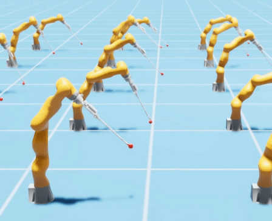

|
Samuel Schmidgall Hello there, and welcome to my website! My name is Samuel Schmidgall and I’m a researcher & engineer focused on applying AI to the field of medicine and medical robotics. I am a 2nd year PhD student @ Johns Hopkins University in Electrical and Computer Engineering. I’m jointly advised by Rama Chellappa and Axel Krieger in the Intelligence for Engineering and Medicine Lab (AIEM) and the Intelligent Medical Robotic Systems and Equipment Lab (IMERSE) toward building autonomous surgical robots and medical language models. I’m very grateful to have received support from the NSF Graduate Research fellowship (NSF GRFP). I was previously an intern at Stanford during Summer 2024 and am currently an intern at AMD as part of the generative AI team. Email / LinkedIn / Scholar / Twitter | X / Github |
{kind=link}
ResearchSome of my favorite papers are highlighted. |

|
Surgical Robot Transformer (SRT): Imitation Learning for Surgical Subtasks
Ji Woong Kim, Tony Zhao, Samuel Schmidgall, Anton Deguet, Marin Kobilarov, Chelsea Finn, Axel Krieger 8th Annual Conference on Robot Learning (CoRL), 2024 bibtex This paper introduces SurGen, a text-guided diffusion model tailored for surgical video synthesis, producing the highest resolution and longest duration videos among existing surgical video generation models. |
|
SurGen: Text-Guided Diffusion Model for Surgical Video Generation
Joseph Cho, Samuel Schmidgall, Cyril Zakka, Mrudang Mathur, Rohan Shad, William Hiesinger arXiv preprint arXiv:2408.14028, 2024 bibtex This paper introduces SurGen, a text-guided diffusion model tailored for surgical video synthesis, producing the highest resolution and longest duration videos among existing surgical video generation models. |
|
|
GP-VLS: A general-purpose vision language model for surgery
Samuel Schmidgall*, Joseph Cho*, Cyril Zakka, William Hiesinger arXiv preprint arXiv:2407.19305, 2024 bibtex This paper introduces GP-VLS, a general-purpose vision language model for surgery that integrates medical and surgical knowledge with visual scene understanding. |
|
|
Brain-inspired learning in artificial neural networks: a review
Samuel Schmidgall, Rojin Ziaei, Jascha Achterberg, Louis Kirsch, Pardis Hajiseyedrazi, Jason Eshraghian APL Machine Learning, 2024 bibtex Comprehensive review of current brain-inspired learning representations in artificial neural networks. |
|
|
|
AgentClinic: a multimodal agent benchmark to evaluate AI in simulated clinical environments
Samuel Schmidgall, Rojin Ziaei, Carl Harris, Eduardo Reis, Jeffrey Jopling, Michael Moor arXiv preprint arXiv:2405.07960, 2024 bibtex AgentClinic turns static medical QA problems into agents in a clinical environment in order to present a more clinically relevant challenge for multimodal language models. |
|
Robots learning to imitate surgeons—challenges and possibilities
Samuel Schmidgall, Ji Woong Kim, Axel Krieger Nature Reviews Urology, 2024 bibtex Autonomous surgical robots have the potential to transform surgery and increase access to quality health care. Advances in artificial intelligence have produced robots mimicking human demonstrations. This application might be feasible for surgical robots but is associated with obstacles in creating robots that emulate surgeon demonstrations. |
|
|
General surgery vision transformer: A video pre-trained foundation model for general surgery
Samuel Schmidgall, Ji Woong Kim, Jeffrey Jopling, Axel Krieger arXiv preprint arXiv:2403.05949, 2024 bibtex This paper introduces large video dataset of surgery videos, a general surgery vision transformer (GSViT) pretrained on surgical videos, code and weights for procedure-specific fine-tuned versions of GSViT across 10 procedures. |
|
|
|
Addressing and mitigating cognitive bias in medical language models.
Samuel Schmidgall, Carl Harris, Ime Essien, Daniel Olshvang, Tawsifur Rahman, Ji Woong Kim, Rojin Ziaei, Jason Eshraghian, Peter Abadir, Rama Chellappa NPJ Digital Medicine, 2024 bibtex The addition of simple cognitive bias prompts significantly degrades performance. We introduce BiasMedQA to evaluate bias robustness on medical QA problems, and demonstrate mitigation techniques. |
|  |
Surgical Gym: A high-performance GPU-based platform for reinforcement learning with surgical robots
Samuel Schmidgall, Jason Eshraghian, Axel Krieger 2024 IEEE International Conference on Robotics and Automation (ICRA), 2024 bibtex Surgical Gym is an open-source high performance platform for surgical robot learning where both the physics simulation and reinforcement learning occur directly on the GPU. |
|
|
General-purpose foundation models for increased autonomy in robot-assisted surgery
Samuel Schmidgall, Ji Woong Kim, Alan Kuntz, Ahmed Ezzat Ghazi, Axel Krieger Nature Machine Intelligence, 2024 bibtex This perspective aims to provide a path toward increasing robot autonomy in robot-assisted surgery through the development of a multi-modal, multi-task, vision-language-action model for surgical robots. |
|
Learning a Library of Surgical Manipulation Skills for Robotic Surgery
Ji Woong Kim, Samuel Schmidgall, Axel Krieger, Marin Kobilarov 7th Conference on Robot Learning (CoRL), Bridging the Gap between Cognitive Science and Robot Learning in the Real World: Progresses and New Directions, 2023 bibtex Preliminary progress towards learning a library of surgical manipulation skills using the da Vinci Research Kit (dVRK). |
|
|
Language models are susceptible to incorrect patient self-diagnosis in medical applications
Rojin Ziaei, Samuel Schmidgall NeurIPS 2023 Deep Generative Models for Healthcare Workshop, 2023 bibtex We show that when a patient proposes incorrect bias-validating information, the diagnostic accuracy of LLMs drop dramatically, revealing a high susceptibility to errors in self-diagnosis. |
Synaptic motor adaptation: A three-factor learning rule for adaptive robotic control in spiking neural networks
Samuel Schmidgall, Joseph Hays Proceedings of the 2023 International Conference on Neuromorphic Systems, 2023 bibtex This paper introduces the Synaptic Motor Adaptation (SMA) algorithm, a novel approach to achieving real-time online adaptation in quadruped robots through the utilization of neuroscience-derived rules of synaptic plasticity with three-factor learning. |
Meta-SpikePropamine: Learning to learn with synaptic plasticity in spiking neural networks
Samuel Schmidgall, Joseph Hays Frontiers in Neuroscience, 2023 bibtex We introduce a bi-level optimization framework that seeks to both solve online learning tasks and improve the ability to learn online using models of plasticity from neuroscience. |
Biological connectomes as a representation for the architecture of artificial neural networks
Samuel Schmidgall, Catherine Schuman, Maryam Parsa Proceedings of the 2023 AAAI Conference on Artificial Intelligence "Systems Neuroscience Approach to General Intelligence" Workshop, 2023 bibtex We translate the motor circuit of the C. Elegans nematode into artificial neural networks at varying levels of biophysical realism and evaluate the outcome of training these networks on motor and non-motor behavioral tasks. |

|
Locked fronts in a discrete time discrete space
population model.
Matthew Holzer, Zachary Richey, Wyatt Rush, Samuel Schmidgall Journal of Mathematical Biology., 2023 bibtex We construct locked fronts for a particular piecewise linear reproduction function. These fronts are shown to be linear combinations of exponentially decaying solutions to the linear system near the unstable state. |
|
SpikePropamine: Differentiable Plasticity in
Spiking Neural Networks.
Samuel Schmidgall, Julia Ashkanazy, Wallace Lawson, Joseph Hays Frontiers in Neurorobotics., 2021 bibtex We introduce a framework for simultaneously learning the underlying fixed-weights and the rules governing the dynamics of synaptic plasticity and neuromodulated synaptic plasticity in SNNs through gradient descent. |
|
|
Optimal Localized Trajectory Planning of Multiple Non-holonomic Vehicles
Anton Lukyanenko, Heath Camphire, Avery Austin, Samuel Schmidgall, Damoon Soudbakhsh 2021 IEEE Conference on Control Technology and Applications (CCTA), 2021 bibtex We present a trajectory planning method for multiple vehicles to navigate a crowded environment, such as a gridlocked intersection or a small parking area. |
|
|
Self-Constructing Neural Networks through Random Mutation
Samuel Schmidgall ICLR 2021 Never-Ending Reinforcement Learning Workshop, 2021 bibtex This paper presents a simple method for learning neural architecture through random mutation. |
|
|
Adaptive Reinforcement Learning through Evolving Self-Modifying Neural Networks
Samuel Schmidgall Proceedings of the 2020 Genetic and Evolutionary Computation Conference Companion., 2020 bibtex We show quadrupedal agents evolved using self-modifying plastic networks are more capable of adapting to complex meta-learning learning tasks, even outperforming the same network updated using gradient-based algorithms while taking less time to train. |
|
Original source code. |